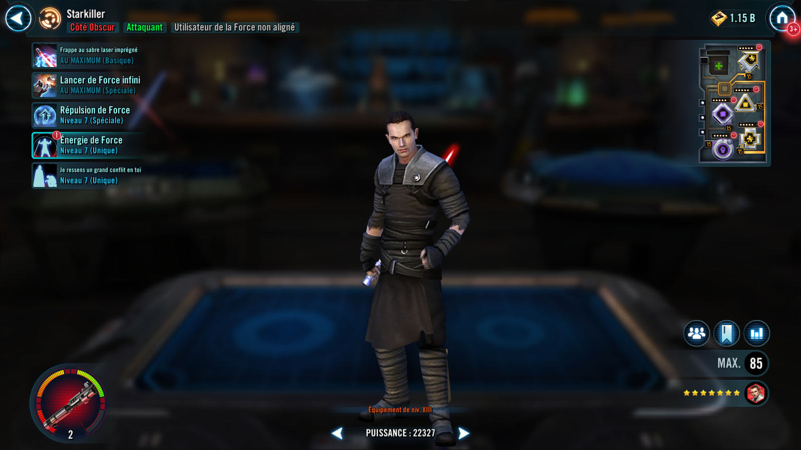
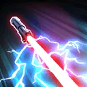
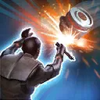
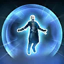
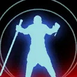
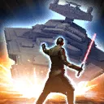
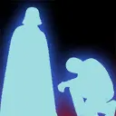

Starkiller
A powerful Dark Side Force User whose inner conflict lifts up other Force Users
A powerful Dark Side Force User whose inner conflict lifts up other Force Users


Deal Physical damage to target enemy twice. If it's Starkiller's turn, inflict Shock for 1 turn to target enemy and deal Physical damage to all other enemies which can't be countered.
Unleashed: Reduce Special ability cooldowns by 1

Deal Physical damage to target enemy and inflict Daze and Vulnerable for 2 turns, which can't be resisted. Gain 25 stacks of Force Energy. This ability can't be evaded.
Unleashed: Inflict Buff Immunity and Healing Immunity for 2 turns, which can't be resisted
Omicron Boost : While in Grand Arenas: While Unleashed, dispel all debuffs on all allies, and the Buff Immunity and Healing Immunity can't be copied, dispelled, or resisted.

Dispel all buffs on target enemy and deal Physical damage to all enemies, which can't be evaded. This attack deals 5% more damage for each buff dispelled.
Unleashed: Deal 25% more damage for each buff dispelled instead
Omicron Boost : While in Grand Arenas: Dispel all buffs on all enemies.

Starkiller has +30% Counter Chance, Critical Chance, Defense, Defense Penetration, and Offense, and he is immune to Fear.
Starkiller gains 4 stacks of Force Energy (max 100 stacks) each time he deals damage to an enemy, increased to 5 stacks on a critical hit. At 100 stacks, he loses all stacks of Force Energy and gains Unleashed until the end of the battle.
When Starkiller gains Unleashed:
- He gains +70% Counter Chance, Critical Chance, Defense, Defense Penetration, and Offense
- He dispels all debuffs on himself
- He takes a bonus turn
- His cooldowns are reset
- If there are no Galactic Legend allies, gains the Special ability Size Means Nothing.
Force Energy: At 100 stacks, lose all stacks and gain Unleashed
Unleashed: Abilities gain additional effects; can't gain Force Energy
Size Means Nothing: Limit one use per battle.
Deal damage equal to 80% of Starkiller's Max Health to all enemies and Stun them for 1 turn, which can't be resisted. All allies recover 100% Health and Protection. If this ability defeats an enemy, Starkiller takes a bonus turn. This ability can't be evaded.

Limit one use per battle.
Deal damage equal to 80% of Starkiller's Max Health to all enemies and Stun them for 1 turn, which can't be resisted. All allies recover 100% Health and Protection. If this ability defeats an enemy, Starkiller takes a bonus turn. This ability can't be evaded.

At the start of battle, if there are no Galactic Legend allies and Starkiller has exactly one Jedi, one Light Side Unaligned Force User, one Sith, and one other Dark Side Unaligned Force user ally, all allies gain the following bonuses:
- 100% Critical Damage and Max Health
- 100% Max Protection until the first time Starkiller is defeated
- 35 Speed
- Immune to Daze and Stun
Omicron Boost : While in Grand Arenas: If the conditions for this ability were met at the start of battle, all of the following bonuses are also gained:
- At the start of battle, Jedi Tank allies Taunt for 1 turn
- All allies have +35 Speed
- Debuffed enemies deal 50% less damage
- Whenever a Sith ally uses a Basic ability, Starkiller assists, dealing 20% less damage
- Whenever another Dark Side Unaligned Force User uses a Special ability, all allies gain Critical Hit Immunity for 1 turn
- Whenever Starkiller uses a Special ability, Light Side Healer allies have their cooldowns reduced by 4, and Jedi Tank allies gain Damage Immunity and Taunt for 1 turn
(In 3v3 Grand Arenas, any combination where the team includes no more than one Jedi, one Light Side Unaligned Force User, one Sith, and/or one other Dark Side Unaligned Force user will fulfill the conditions for this ability)